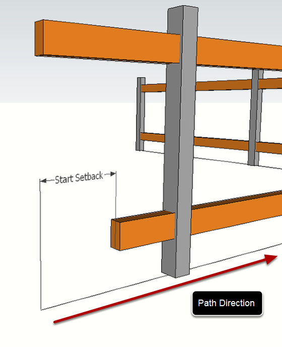
Start Setback defines the distance from the start of the path that the Profile Member starts.
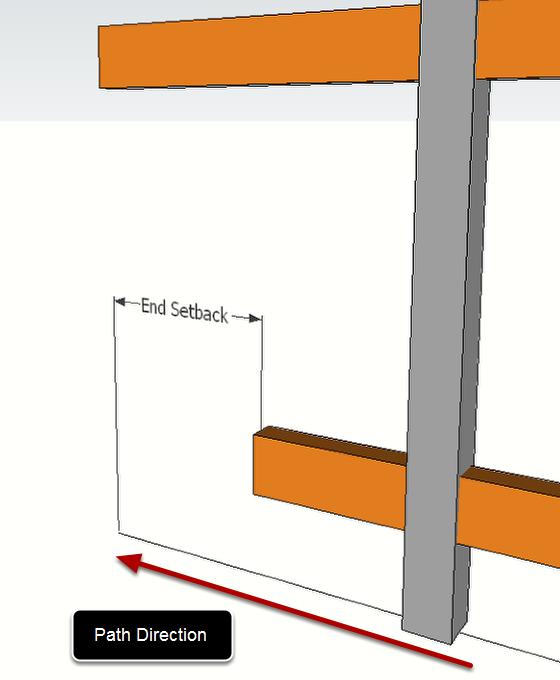
End Setback defines the distance from the end of the path that the Profile Member ends.
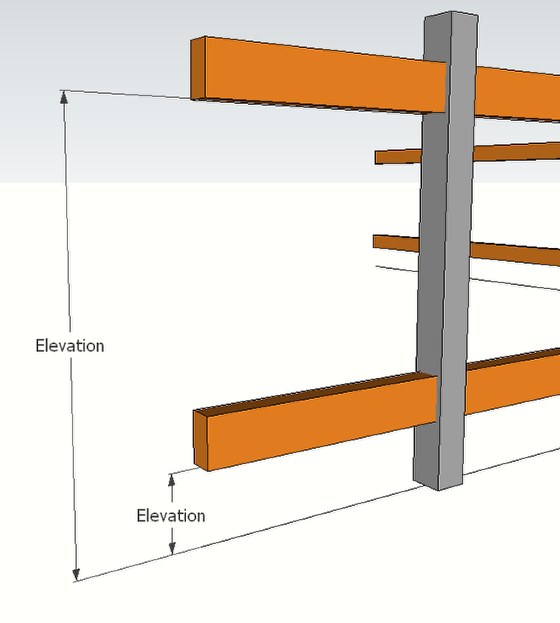
Elevation defines the height of the Profile Member path above the reference path of the Assembly.
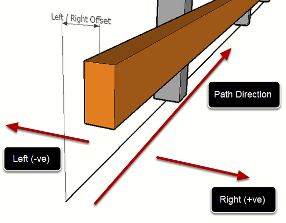
Left / Right Offset defines the horizontal offset of the Profile Member path relative to the Assembly path. Enter a positive value to offset to the right and negative value to offset to the left.
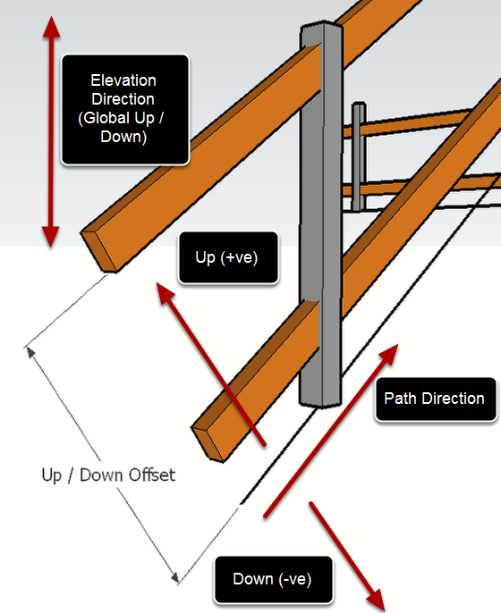
Up / Downt Offset defines the (local) vertical offset of the Profile Member path relative to the Assembly path. Enter a positive value to offset up and negative value to offset down.
If the assembly path is always horizontal, then this is equivalent to the Elevation setting. However, for sloping paths, the effect is different since Up / Down works within the Local axis of the path, and Elevation works within the Global axis of the model.
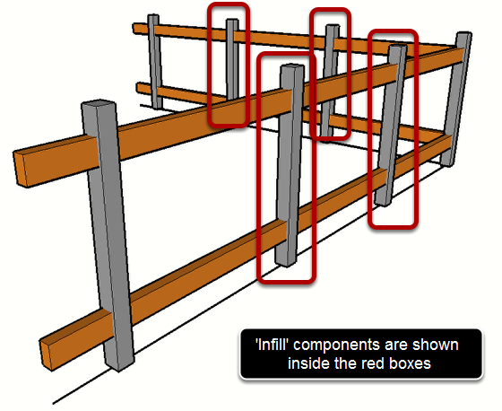
If the Infill box is checked, the component will be placed at regular intervals, defined by the following settings:
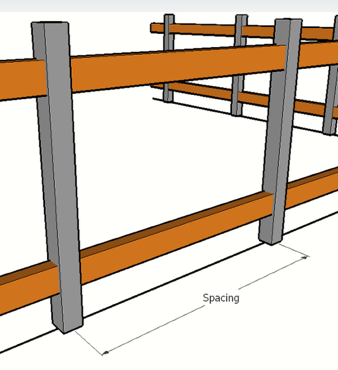
Spacing defines the distance between 'Infill' components.
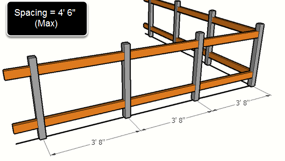
When 'Infill' components are set to 'Max' spacing, the spacing between infill components will not exceed the value entered for spacing and the components will be evenly distributed.
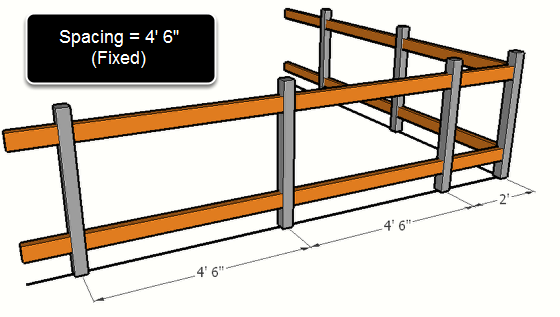
When 'Infill' components are set to 'Fixed' spacing (Max turned off) the spacing between infill components will be fixed to the value entered for spacing (where possible).
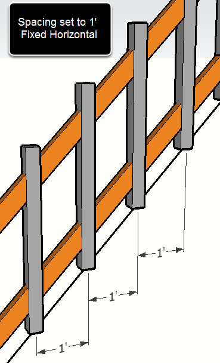
When 'Infill' components are set to 'Horizontal' spacing, the spacing will be measured horizontally. If this setting is turned off, then the spacing will be measured along the path of the Assembly.
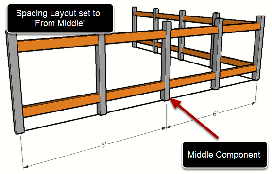
When the Layout is set to 'From Middle', a component will be placed at the middle point between two junctions and the remaining components will be laid out relative to the middle component.
When the Layout is set to 'From Start', the components will be laid out relative to the start point between two junctions.
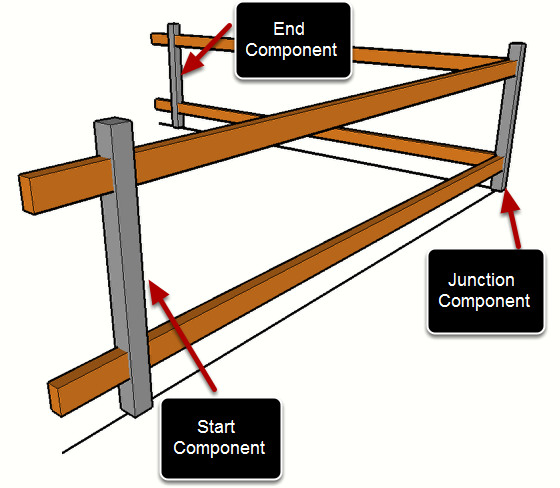
The Start, Junctions, and End checkboxes define whether to place components at the path start, path junctions, and at the path end.
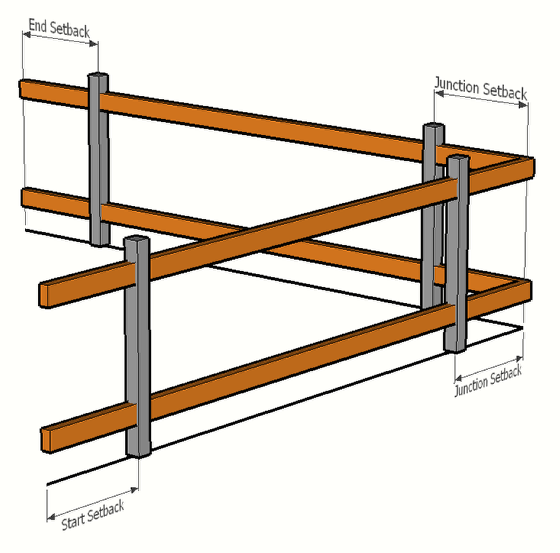
Start setback defines the distance from the path start to place the component.
Junction setback defines the distance from the path junctions to place the component.
End setback defines the distance from the path end to place the component.
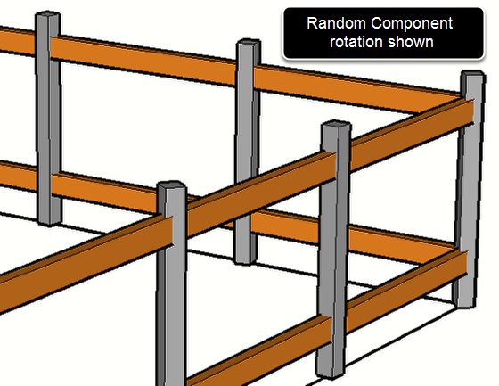
The Rotation setting defines the rotation of the component about it's Blue (up) axis. The options for rotation include:
The elevation setting of a component is equivalent to the elevation setting of a Profile Member. See the Profile Member Assembly attributes for further details.
The Left / Right offset setting of a component is equivalent to the Left / Right offset setting of a Profile Member. See the Profile Member Assembly attributes for further details.
The Up / Down offset setting of a component is equivalent to the Up / Down offset setting of a Profile Member. See the Profile Member Assembly attributes for further details.
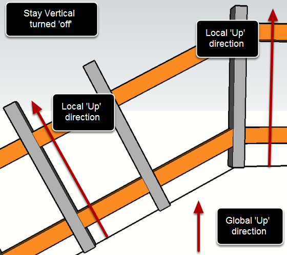
If the Component is set to 'Stay Vertical' then the Component's Blue axis will always point Up (globally), regardless of the path direction. If this setting is turned 'off', then the Blue axis will align with the local Up direction of the Assembly path.
If this setting is enabled, the Component will be mirrored about the Up direction of the Assembly path. This is similar to the SketchUp command to Flip the component along it's Green axis.
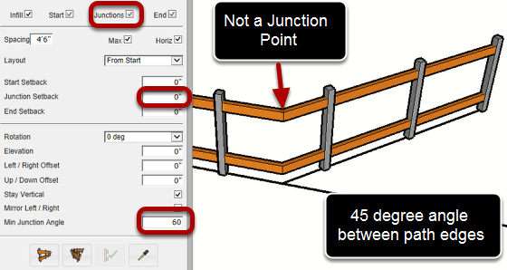
Minimum Junction Angle sets the angle between edges that is required to form a junction point. If the angle between path edges is greater than the minimum angle, the vertex will be treated as a junction point.
A junction point is a dicontinuity in the layout and spacing of an infill component. Junction points divide an assembly path into segments or curves. If the angle between edges is less than the minimum junction angle, the edges will be treated as a curve.
Components can be located specifically at junction points if the junction setback distance is set to zero.
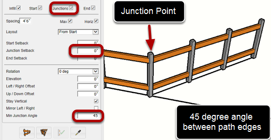
By decreasing the minimum junction angle to 45 degrees, a junction point will be created every time the assembly path changes direction by an angle of 45 degrees or more.